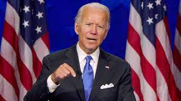
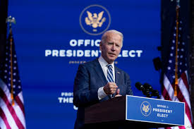
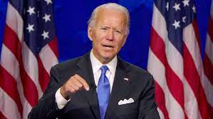
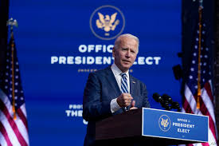

Joe Biden

 



Joe Biden President of the United States of America
Joseph Robinette Biden Jr. (/ˈbaɪdən/ BY-dən; born November 20, 1942) is an American politician who is the 46th president of the United States. A member of the Democratic Party, he served as the 47th vice president from 2009 to 2017 under Barack Obama and represented Delaware in the United States Senate from 1973 to 2009. Born and raised in Scranton, Pennsylvania, and later in New Castle County, Delaware, Biden studied at the University of Delaware before earning his law degree from Syracuse University in 1968. He was elected to the New Castle County Council in 1970 and became the sixth-youngest senator ever when he was elected to the U.S. Senate from Delaware in 1972, at age 29. Biden was a longtime member of the Senate Foreign Relations Committee and eventually became its chairman. He also chaired the Senate Judiciary Committee from 1987 to 1995, dealing with drug policy, crime prevention, and civil liberties issues; led the effort to pass the Violent Crime Control and Law Enforcement Act and the Violence Against Women Act; and oversaw six U.S. Supreme Court confirmation hearings, including the contentious hearings for Robert Bork and Clarence Thomas. He ran unsuccessfully for the Democratic presidential nomination in 1988 and 2008. Biden was reelected to the Senate six times, and was the fourth-most senior senator when he became Obama's vice president after they won the 2008 presidential election. During eight years as vice president, Biden leaned on his Senate experience and frequently represented the administration in negotiations with congressional Republicans, including on the Budget Control Act of 2011, which resolved a debt ceiling crisis, and the American Taxpayer Relief Act of 2012, which addressed the impending "fiscal cliff". He also oversaw infrastructure spending in 2009 to counteract the Great Recession. On foreign policy, Biden was a close counselor to the president and took a leading role in designing the withdrawal of U.S. troops from Iraq in 2011. In 2017, Obama awarded Biden the Presidential Medal of Freedom with distinction, making him the first president to receive it before taking office. On April 25, 2019, Biden announced his candidacy in the 2020 presidential election. He became the presumptive Democratic nominee in April 2020 and reached the delegate threshold needed to secure the nomination in June 2020. Biden and his running mate Kamala Harris defeated incumbent president Donald Trump and vice president Mike Pence in the general election. Biden is the oldest elected president, the first from Delaware, and the second Catholic. His early presidential activity centered around proposing, lobbying for, and signing into law the American Rescue Plan Act of 2021 to speed up the United States' recovery from the COVID-19 pandemic and the ongoing recession, as well as a series of executive orders. Biden's orders addressed the pandemic and reversed several Trump administration policies, including by rejoining the Paris Agreement on climate change and reaffirming protections for Deferred Action for Childhood Arrivals recipients. In April 2021, Biden announced the withdrawal of all U.S. troops from Afghanistan by September 2021.